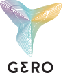
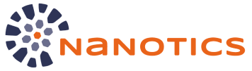

about us
Melnichek Investments is a company driven to improve the quality of human lives by funding and supporting machine learning and biotech startups. Melnichek Investments uses its owner's funds, sourced from previous successful startups acquisitions such as AIMATTER company (mobile applications Fabby & Fabby Look) acquired by Google and Vochi (mobile applications for video editing), acquired by Pinterest.
projects
- 
Gero is a physics-enabled biotechnology company creating therapeutics against chronic diseases with a mission to slow down human aging itself.
Rainbow.ai brings users a precise and accurate weather forecast they can rely on. The app provides hyperlocal predictions and notifies users about weather changes when they need it the most. Our task is to warn our users in time about dangerous weather conditions as well as properly plan activities outdoor.
Daedalean, a developer of safety-critical and certifiable artificial intelligence systems for situational awareness and flight control.
- 
NaNotics is a preclinical-stage biopharmaceutical company is developing NaNots™, novel subtractive nanoparticles that treat disease by capturing and clearing pathogenic molecules from blood.
Spike Dynamics. Small, powerful actuators for Aerospace and Robotics.
Gero is a physics-enabled biotechnology company creating therapeutics against chronic diseases with a mission to slow down human aging itself.
Rainbow.ai brings users a precise and accurate weather forecast they can rely on. The app provides hyperlocal predictions and notifies users about weather changes when they need it the most. Our task is to warn our users in time about dangerous weather conditions as well as properly plan activities outdoor.
Daedalean, a developer of safety-critical and certifiable artificial intelligence systems for situational awareness and flight control.
NaNotics is a preclinical-stage biopharmaceutical company is developing NaNots™, novel subtractive nanoparticles that treat disease by capturing and clearing pathogenic molecules from blood
Spike Dynamics. Small, powerful actuators for Aerospace and Robotics.
press
contacts
We are looking for talented minds, world-improving ideas and cool projects!
hello@melnichek.investmentsMelnichek Investments LTD
28th October street 359,
Office 210
3107, Limassol Cyprus